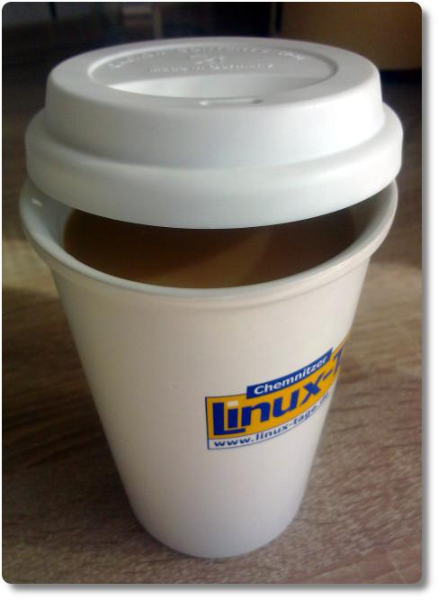

Becherbonus
Vor einigen Tagen las ich in der Frankfurter Rundschau folgendes: Im Raum Offenbach werden derzeit Unternehmer dazu aufgerufen, sich an der Aktion „BecherBonus“ zu beteiligen. Ziel soll sein, die täglich anfallende Menge von Coffee-to-go Bechern im Papiermüll zu senken. Unternehmen, die Kaffee zum Mitnehmen anbieten, sollten auch Alternativen zum Wegwerf-Becher anbieten.
Wenn Unternehmen ihren Kunden einen Preisnachlass bei Verwendung eines selbst mitgebrachten Kaffeebechers geben, würden sie im Gegenzug von kommunalen Stellen öffentlichkeitswirksam unterstützt.
Ich finde die Aktion super und hoffe, dass sich hier in der Gegend wenigstens ein paar Unternehmen anschließen. Erstens, weil ich Einwegverpackungen generell doof finde, und zweitens, weil ich denke dass wir immer erst einen Tritt brauchen, damit sich etwas ändert.
Unternehmen, die mitmachen wollen, sollen sich per Mail an pressestelle@umwelt.hessen.de wenden und werden dann auf der Internetseite http://hessen-nachhaltig.de/de/becherbonus.html veröffentlicht. Zur Zeit sind es immerhin schon fünf Stück, hoffentlich werden es bald noch mehr.
Was bleibt uns also zu tun? Teilen, Weitererzählen und immer einen Mehrwegbecher dabei haben. :)
